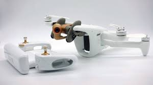

Premieres SAE
SAE 0, SAE 1, SAE 2 et SAE 3 : bases d'electronique, cartes, capteurs, mesures, robotique et premiers livrables techniques.
BUT GEII - parcours ESE
Etudiant en BUT GEII, parcours Electronique et Systemes Embarques. Ce portfolio presente mes projets techniques par annee : electronique, robotique, FPGA, interfaces embarquees, drone et IA.
Chronologie
Mon parcours progresse des bases electroniques vers des projets plus complets melant programmation, integration materielle, interfaces et essais terrain.
SAE 0, SAE 1, SAE 2 et SAE 3 : bases d'electronique, cartes, capteurs, mesures, robotique et premiers livrables techniques.
Voiture autonome, robot eviteur d'obstacle, FPGA regulateur de vitesse, puis stage drone autour de la detection de victimes.
SAE Kart Dashboard Pro V3, approfondissement systemes embarques et stage de fin de BUT autour d'ARODE, drones et donnees.
BUT1
La premiere annee m'a permis de poser les bases : mesures, cablage, analyse de signaux, premiers prototypes et restitution technique.

Travail de decouverte autour de cartes, composants et premieres manipulations. L'objectif etait de prendre en main les bases de mesure, de cablage et de presentation d'un resultat technique.
Le projet marque le debut de la demarche SAE : observer un systeme, identifier les grandeurs utiles, manipuler le materiel et formaliser les resultats.

Projet centre sur l'analyse de signaux et le comportement de composants. Les essais mettent en avant la mesure, la comparaison entre theorie et pratique et l'interpretation des resultats.
Le travail a consolide les reflexes de diagnostic : lire un montage, mesurer proprement, expliquer un comportement et justifier les ecarts observes.

Projet de mise en pratique avec integration de sous-ensembles. Le travail porte sur la comprehension du fonctionnement global et la validation par tests.
Cette SAE met l'accent sur la relation entre capteurs, traitement et actionneurs, avec une logique de prototype progressivement teste.

Projet robotique autour d'un suiveur de ligne : capteurs, logique de suivi, essais, schema et rapport final.
Le robot devait interpreter la piste puis adapter son comportement. Le projet montre la transition entre electronique de base et systeme embarque simple.
BUT2
La deuxieme annee approfondit la programmation embarquee, la robotique, la logique numerique et une premiere experience professionnelle autour du drone.

Projet de voiture autonome avec rapport et soutenance. Le travail porte sur la logique de decision, la programmation, l'acquisition de donnees et la validation du comportement.
Le projet demandait de relier perception, traitement informatique et comportement du vehicule. La soutenance a permis de presenter les choix techniques et les resultats obtenus.

Projet centre sur l'analyse fonctionnelle, l'evitement d'obstacle et les fonctions informatiques associees au comportement du robot.
Le travail porte sur la decomposition du comportement : detection d'obstacle, choix de trajectoire, commande et verification des fonctions attendues.

Projet de regulation de vitesse avec logique numerique, validation fonctionnelle et exploitation de signaux.
Le projet met en avant l'utilisation d'une architecture FPGA pour traiter des signaux et piloter une regulation, avec essais de comportement et verification du montage.
Stage BUT2
Premiere experience professionnelle autour du projet ARODE, avec detection de victimes par drone pour l'aide aux equipes de secours. Periode : du 13 janvier au 7 mars 2025.



BUT3
La troisieme annee met l'accent sur l'integration logicielle, les interfaces embarquees et le stage de fin de BUT autour d'un drone intelligent pour le projet ARODE.

Application Python / PyQt6 pour Raspberry Pi 4, concue pour afficher des donnees vehicule en temps reel. L'architecture separe les services materiels, la simulation, le StateStore et l'interface.
Le dashboard s'appuie sur des services non bloquants, un mode simulation pour travailler sans materiel et une interface adaptee a la lecture rapide des donnees vehicule.
Les lectures capteurs sont isolees dans des services afin de ne pas bloquer l'interface. Le StateStore centralise les donnees et diffuse les changements vers l'IHM.
Le mode simulation permet de developper, tester et presenter le dashboard sans materiel connecte, en conservant les memes contrats que les services reels.
Stage BUT3
Stage realise a l'Universite de Technologie de Troyes, au sein du LIST3N. La mission principale porte sur une architecture drone ouverte pour la surveillance et l'aide aux secours en situation post-catastrophe.


Travail sur une plateforme Holybro X500 V2 avec Pixhawk 6C, Jetson Orin Nano, liaison SIYI MK32, camera SIYI A8 mini, moteurs T-Motor, ESC Tekko32 F4, batterie Li-ion 4S, distribution FCHUB-12S et protections de cablage. L'objectif est de construire une plateforme plus ouverte qu'un drone DJI, capable d'evoluer vers du traitement IA embarque.
Exploration d'une piste de generation de donnees synthetiques pour enrichir l'entrainement ou l'evaluation d'un VLM : masques, inpainting, segmentation, detourage, augmentation, FLUX Fill, LaMa, PatchMatch, LoRA, SAM2, BiRefNet, YOLO, DEIMV2 et DINOv3. La piste reste experimentale : coherence visuelle, realisme terrain et qualite des annotations restent limitants.
Travail secondaire sur ARODE Live : flux video RTSP, GPS, metadonnees, exports CSV, affichage d'alarmes, tri des detections et solution de secours avec DJI Mavic 2 Pro pendant la mise au point de la plateforme X500.